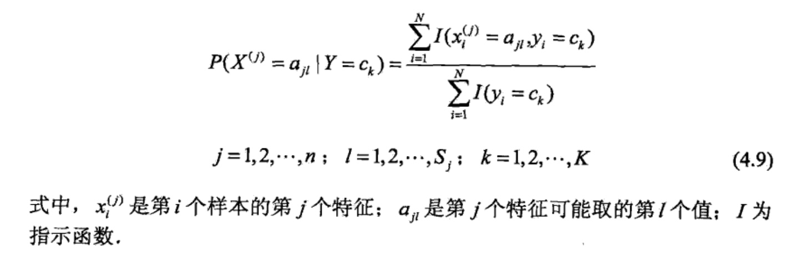
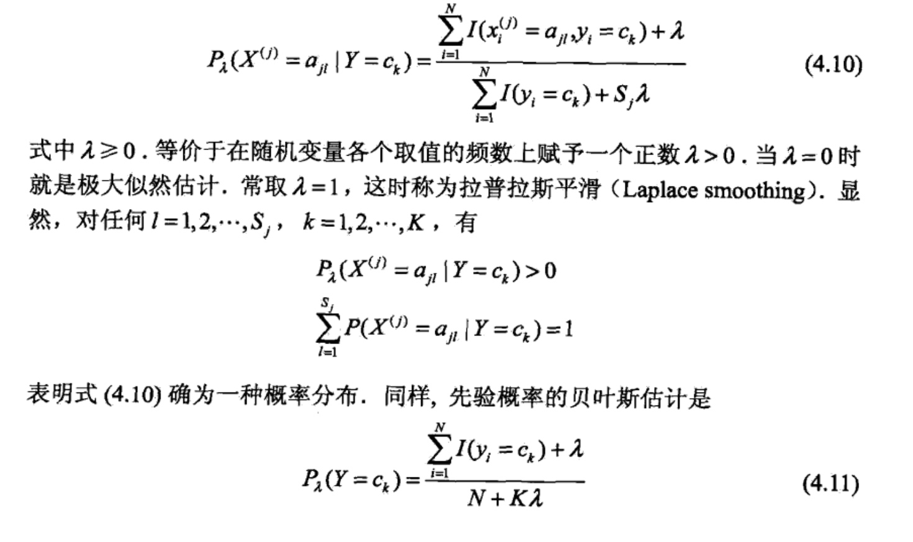
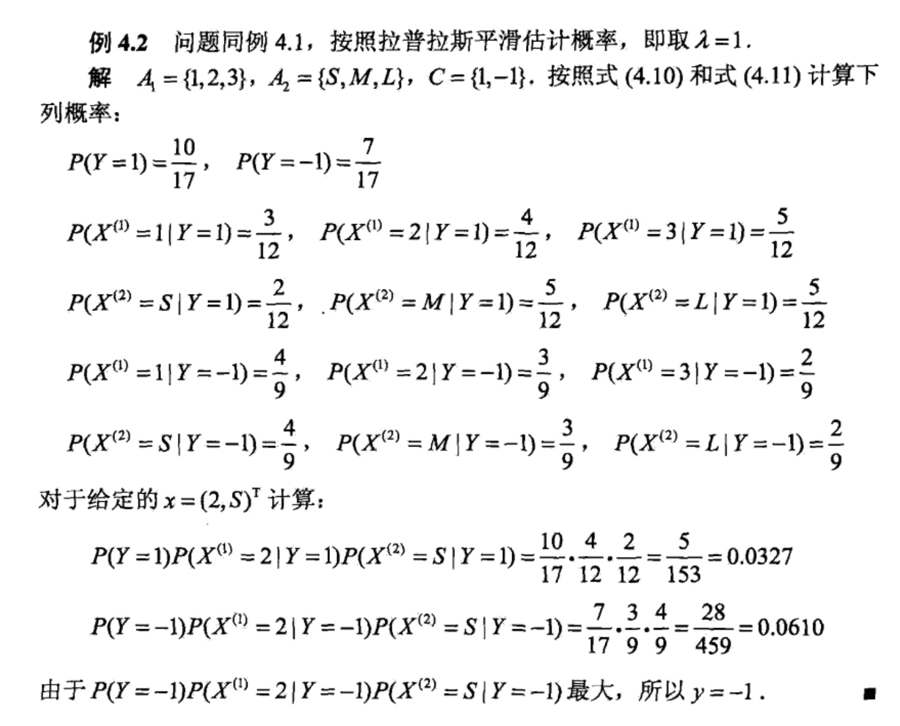

朴素贝叶斯（naive Bayes)法是基于贝叶斯定理与特征条件独立假设的分类方。对于给定的训练数据集，首先基于特征条件独立假设学习输入/输出的联合概率分布：然后基于此模型，对给定的输入:x，利用贝叶斯定理求出后验概率最大的输出:y。朴素贝叶斯法实现简单，学习与预测的效率都很髙，是一种常用的方法.
朴素贝叶斯的学习与分类
基本方法
设输入空间\(\chi \subseteq R^n\)为n维向量的集合，输出空间为类标记集合\(\mathcal{Y}={c_1,c_2,...c_k}\)。输入为特征向量\(x\in \chi\),输出为类标记\(y\in mathcal{Y}\)。X是定义在输入空间\(\chi\)上的随机向量，Y是定义在输出空间\(\mathcal{Y}\)上的随机变量。P(X,Y)是X和Y的联合概率分布。训练数据集：
\(T = {(x_1,y_1),(x_2,y_2),...,(x_N,y_N)}\)
由P(X,Y)独立同分布产生。
朴素贝叶斯法通过训练数据集学习联合概率分布P(X,Y)。具体的，学习以下先验概率分布及条件概率分布。先验概率分布：
\(P(Y = c_k), k=1,2,3...K\)
条件概率分布：
\(P(X=x|Y=c_k)=P(X^{(1)}=x^{(1)},...,X^{(n)}=x^{(n)}|Y=c_k), k=1,2,...K\)
于是学习到联合概率分布P(X,Y)。
条件概率分布P(X=x|Y=\(c_k\))有指数级数量的参数，其估计实际是不可行的，事实上，假设\(x^{(j)}可取值有S_j个，j=1,2,3...n,Y可取值为K个，那么参数个数为K\prod_{j=1}^n{S_j}\)
朴素贝叶斯法对条件概率分布作了条件独立性的假设。由于这是一个较强的假设，朴素贝叶斯法也由此得名。具体地，条件独立性假设是：

朴素贝叶斯法实际上学习到生成数据的机制，所以属于生成模型。条件独立假设等于是说用于分类的特征在类确定的条件下都是条件独立的。这一假设使朴 素贝叶斯法变得简单，但有时会牺牲一定的分类准确率。
朴素贝叶斯法分类时，对给定的输入x,通过学习到的模型计算后验概率分布\(P(Y=C_k|X=x)\),将后验概率最大的类作为x的类输出。后验概率计算根据贝 叶斯定理进行：

后验概率最大化的含义
朴素贝叶斯法将实例分到后验概率最大的类中。这等价于期望风险最小化。假设选择0-1损失函数：

式中f(X)是分类决策函数。这时，期望风险函数为：
期望是对联合分布P(X,Y)取的，由此取条件期望：
为了是期望风险最小化，只需要对\(X=x\)逐个极小化，由此得到：

这样一来，根据期望风险最小化准则就得到了后验概率最大化准则：

即朴素贝叶斯法所采用的原理。
朴素贝叶斯发的参数估计
极大似然估计
在朴素贝叶斯法中，学习意味着估计\(P(Y=c_k)\)和\(P(X^{(j)}=x^{(j)} |Y=c_k)\)。可以应用极大似然估计法估计相应的概率。先验概率\(P(Y=c_k)\)的极大似然估计是:

设第j个特征\(x^{(j)}\)可能取值的几何为{\(a_{j1},a_{j2}....a_{jS_j}\)},条件概率\(P(X^{j}=a_{jl}|Y=c_k)\)的极大似然估计是：

学习与分类算法
下面给出朴素贝叶斯的学习与分类方法。
算法(朴素贝叶斯算法)：

下面用一个例题来解释说明上述算法：


贝叶斯估计
用极大似然估计可能会出现所要估计的概率值为0的情况。这时会影响到后验概率的计算结果，使分类产生偏差，解决这一问题的方法是采用贝叶斯估计。具 体地，条件概率的贝叶斯估计是：

这次再用上述例题来举例，如下所示：

总结：朴素贝叶斯法的学习与预测大为简化。因而朴素贝叶斯法高效，且易于实现。其缺点是分类的性能不一定很高。